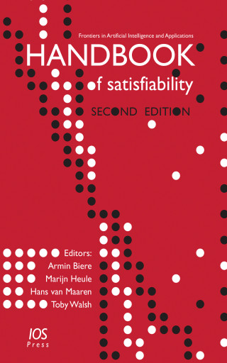
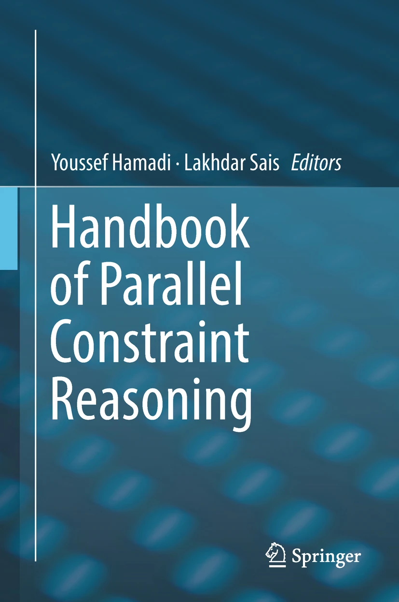
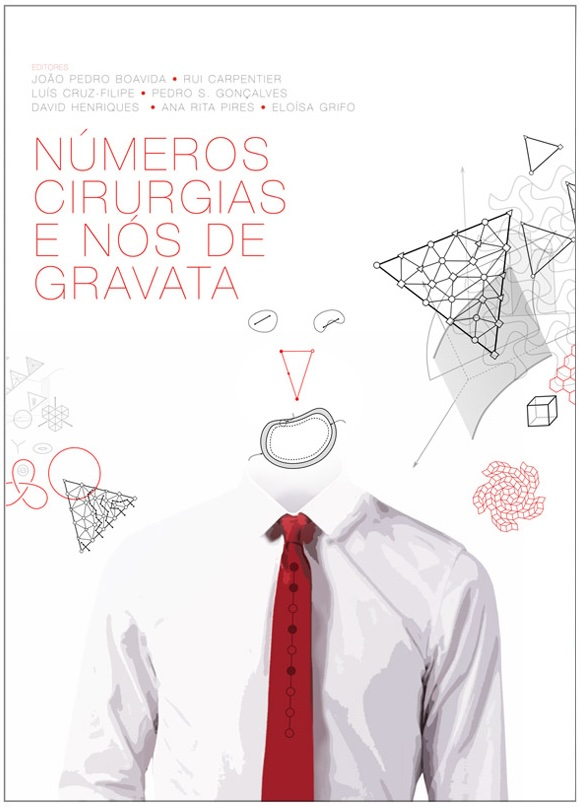

Research
My research focuses on advancing program synthesis and developing technologies that make programming and formal methods more accessible. I seek to combine the rigorous guarantees of automated reasoning with the flexibility and generative capabilities of modern artificial intelligence. My work spans both foundational and applied areas, ranging from constraint solving and formal verification to software engineering, data science, education, and cybersecurity.
Publications
-
2026ProDebug: An Automated Debugging System for PrologIn Theory and Practice of Logic Programming (TPLP), 2026.What Bugs Do Prolog Students Write? An Empirical Taxonomy and Data-Driven Mutation FrameworkIn International Conference on Logic Programming (ICLP), 2026.Can Automated Feedback Turn Students into Happy Prologians?In International Conference on Logic Programming (ICLP), 2026.A Pointer-Ownership Model for C Inspired by RustIn Languages, Compilers, Tools and Theory of Embedded Systems (LCTES), 2026.
-
2025Can Large Language Models Autoformalize Kinematics?In Formal Methods in Computer-Aided Design (FMCAD'25), IEEE, 2025.CUBES: A Parallel Synthesizer for SQL Using ExamplesIn Formal Aspects of Computing (FAC'25), ACM, 2025.Combining Logic and Large Language Models for Assisted Debugging and Repair of ASP ProgramsIn International Conference on Software Testing, Verification and Validation (ICST'25), IEEE, 2025.Revisiting Unnaturalness for Automated Program Repair in the Era of Large Language ModelsIn International Conference on Software Engineering (ICSE'25), ACM, 2025.The Impact of Literal Sorting on Cardinality Constraint EncodingsIn AAAI Conference on Artificial Intelligence (AAAI'25), AAAI Press, 2025.NODEMEDIC-FINE: Automatic Detection and Exploit Synthesis for Node.js VulnerabilitiesIn Network and Distributed System Security Symposium (NDSS'25), The Internet Society, 2025.
-
2024Reverse-Engineering Congestion Control Algorithm BehaviorIn Internet Measurement Conference (IMC'24), ACM, 2024.Crabtree: Rust API Test Synthesis Guided by Coverage and TypeIn Object-Oriented Programming, Systems, Languages, and Applications 2024 (OOPSLA'24), ACM, 2024.Automated Mathematical Discovery and Verification: Minimizing Pentagons in the PlaneIn International Conference on Intelligent Computer Mathematics (CICM'24), Springer, 2024.BatFix: Repairing language model-based transpilationIn Transactions on Software Engineering and Methodology (TOSEM'24), ACM, 2024.Large Language Models for Test-Free Fault LocalizationIn International Conference on Software Engineering (ICSE'24), ACM, 2024.Towards provably performant congestion controlIn Network and Distributed System Security Symposium (NSDI'24), USENIX Association, 2024.Pryde: A Modular Generalizable Workflow for Uncovering Evasion Attacks Against Stateful Firewall DeploymentsIn Symposium on Security and Privacy (S&P'24), IEEE, 2024.Towards Reliable SQL Synthesis: Fuzzing-Based Evaluation and DisambiguationIn International Conference on Fundamental Approaches to Software Engineering (FASE'24), Springer, 2024.
-
2023Certified CNF Translations for Pseudo-Boolean Solving (Extended Abstract)In International Joint Conference on Artificial Intelligence (IJCAI'23), ijcai.org, 2023.MELT: Mining Effective Lightweight Transformations from Pull RequestsIn Automated Software Engineering Conference (ASE'23), IEEE, 2023.UpMax: User Partitioning for MaxSATIn International Conference on Theory and Applications of Satisfiability Testing (SAT'23), LIPIcs, 2023.
-
2022Automating network heuristic design and analysisIn Workshop on Hot Topics in Networks (HotNets'22), ACM, 2022.Certified CNF Translations for Pseudo-Boolean SolvingIn International Conference on Theory and Applications of Satisfiability Testing (SAT'22), LIPIcs, 2022. Best Paper Award.Automatic generation of network function accelerators using component-based synthesisIn ACM SIGCOMM Symposium on SDN Research (SOSR'22), ACM, 2022.Patch Generation with Language Models: Feasibility and Scaling BehaviorIn Deep Learning for Code Workshop (DL4C @ ICLR'22), 2022.
-
2021

Maximum SatisfiabilityBook chapter. In Handbook of Satisfiability, IOS, 2021.Automated Code Repair to Ensure Spatial Memory SafetyIn Automated Program Repair at ICSE (APR@ICSE'21), 23-30, 2021.Counterfeiting Congestion Control AlgorithmsIn Workshop on Hot Topics in Networks (HotNets'21), ACM, 2021.AlloyMax: Bringing Maximum Satisfaction to Relational SpecificationsIn Symposium on the Foundations of Software Engineering (FSE'21), ACM, 2021. Distinguished Paper Award.SyRust: Automatic Testing of Rust Libraries with Semantic-Aware Program SynthesisIn Conference on Programming Language Design and Implementation (PLDI'21), ACM, 2021.SOAR: A Synthesis Approach for Data Science API RefactoringIn International Conference on Software Engineering (ICSE'21), ACM, 2021.FOREST: An Interactive Multi-tree Synthesizer for Regular ExpressionsIn International Conference on Tools and Algorithms for the Construction and Analysis of Systems (TACAS'21), Springer, 2021.Finding Invariants of Distributed Systems: It's a Small (Enough) World After AllIn Network and Distributed System Security Symposium (NSDI'21), USENIX Association, 2021.Formal Verification of a Mixed-Trust Synchronization ProtocolIn International Conference on Real-Time Networks and Systems (RTNS'21), ACM, 2021. -
2020Program equivalence for assisted grading of functional programsIn Object-oriented Programming, Systems, Languages, and Applications (OOPSLA'20), ACM, 2020.UNCHARTIT: An Interactive Framework for Program Recovery from ChartsIn Automated Software Engineering Conference (ASE'20), IEEE, 2020.überSpark: Practical, Provable, End-to-End Guarantees on Commodity Heterogeneous Interconnected Computing PlatformsIn ACM SIGOPS Operating Systems Review (OSR'20), ACM, 2020.SQUARES: A SQL Synthesizer Using Query Reverse EngineeringIn International Conference on Very Large Data Bases (VLDB'20), ACM, 2020.Coloring Unit-Distance Strips using SATIn International Conference on Logic for Programming, Artificial Intelligence and Reasoning (LPAR'20), EPiC Series in Computing, 2020.
-
2019Open-WBO-Inc: Approximation Strategies for Incomplete Weighted MaxSATJournal on Satisfiability, Boolean Modeling and Computation 11(1): 73-97, 2019.MaxSAT Evaluation 2018: New Developments and Detailed ResultsJournal on Satisfiability, Boolean Modeling and Computation 11(1): 99-131, 2019.An Android Malware Detection Framework Using Graph Embeddings and Convolutional Neural NetworksIn Catalan Conference on Artificial Intelligence (CCIA'19), 45-53, 2019.Encodings for Enumeration-Based Program SynthesisIn Principles and Practice of Constraint Programming (CP'19), 583-599, Springer, 2019.Maximal Multi-layer Specification SynthesisIn Symposium on the Foundations of Software Engineering (FSE'19), ACM, 2019.Trinity: An Extensible Synthesis Framework for Data ScienceIn International Conference on Very Large Data Bases (VLDB'19), ACM, 2019.
-
2018

Parallel Maximum SatisfiabilityBook chapter. In Handbook of Parallel Constraint Reasoning, Springer, 2018.Approximation Strategies for Incomplete MaxSATIn Principles and Practice of Constraint Programming (CP'18), 219-228, Springer, 2018.Learning-Sensitive Backdoors with RestartsIn Principles and Practice of Constraint Programming (CP'18), 453-469, Springer, 2018.The Effect of Structural Measures and Merges on SAT Solver PerformanceIn Principles and Practice of Constraint Programming (CP'18), 436-452, Springer, 2018.Program Synthesis using Conflict-Driven LearningIn Conference on Programming Language Design and Implementation (PLDI'18), 420-435, ACM, 2018. Distinguished Paper Award. -
2017Incremental Bounded Model Checking for Embedded SoftwareFormal Aspects of Computing 29(5): 911-931, 2017.Component-based synthesis of table consolidation and transformation tasks from examplesIn Conference on Programming Language Design and Implementation (PLDI'17), 422-436, ACM, 2017.Component-based synthesis for complex APIsIn Symposium on Principles of Programming Languages (POPL'17), 599-612, ACM, 2017.Automated Synthesis of Semantic Malware Signatures using Maximum SatisfiabilityIn Network and Distributed System Security Symposium (NDSS'17), Internet Society, 2017.
-
2016Hunter: next-generation code reuse for JavaIn International Symposium on Foundations of Software Engineering (FSE'16), 1028-1032, ACM, 2016.Automatic Generation of Propagation Complete SAT EncodingsIn International Conference on Verification, Model Checking, and Abstract Interpretation (VMCAI'16), 536-556, Springer, 2016.
-
2015Parallel Search for Maximum SatisfiabilityConstraints 20(4): 469-470, 2015.Deterministic Parallel MaxSAT SolvingInternational Journal on Artificial Intelligence Tools 24(3): 1550005:1-1550005:25, 2015.Improving Linear Search Algorithms with Model-based Approaches for MaxSAT SolvingJournal of Experimental & Theoretical Artificial Intelligence 27(5): 673-701, 2015.Exploiting Resolution-based Representations for MaxSAT SolvingIn International Conference on Theory and Applications of Satisfiability Testing (SAT'15), Springer, 2015.Generalized Totalizer Encoding for Pseudo-Boolean ConstraintsIn Principles and Practice of Constraint Programming (CP'15), Springer, 2015.From AgentSpeak to C for Unmanned Aerial VehiclesIn Towards Autonomous Robotic Systems (TAROS'15), Springer, 2015.Successful Use of Incremental BMC in Automotive IndustryIn Formal Methods for Industrial Critical Systems (FMICS'15), Springer, 2015.
-
2014On Using Incremental Encodings in Unsatisfiability-based MaxSAT SolvingJournal on Satisfiability, Boolean Modeling and Computation 9(1): 59-81, 2014.Incremental Cardinality Constraints for MaxSATIn Principles and Practice of Constraint Programming (CP'14), Springer, 2014. Most influential paper at CP'14.Open-WBO: A Modular MaxSAT SolverIn International Conference on Theory and Applications of Satisfiability Testing (SAT'14), Springer, 2014.
-
2013Community-based Partitioning for MaxSAT SolvingIn International Conference on Theory and Applications of Satisfiability Testing (SAT'13), Springer, 2013.
-
2012

Boolean Satisfiability and Optimization: Games, Puzzles and Genetics (in Portuguese)Book chapter. In Números, Cirurgias e Nós de Gravata, 252-270, IST Press, 2012.Parallel Search for Maximum SatisfiabilityAI Communications 25(2): 75-95, 2012.An Overview of Parallel SAT SolvingConstraints 17(3): 304-347, 2012.On Partitioning for Maximum SatisfiabilityIn European Conference on Artificial Intelligence (ECAI'12), IOS Press, 2012.Clause Sharing in Parallel MaxSATIn Learning and Intelligent Optimization (LION'12), Springer, 2012. -
2011Exploiting Cardinality Encodings in Parallel Maximum SatisfiabilityIn International Conference on Tools with Artificial Intelligence (ICTAI'11), IEEE, 2011.
-
2010Improving Unsatisfiability-based Algorithms for Boolean OptimizationIn International Conference on Theory and Applications of Satisfiability Testing (SAT'10), Springer, 2010.Improving Search Space Splitting for Parallel SAT SolvingIn International Conference on Tools with Artificial Intelligence (ICTAI'10), IEEE, 2010.
Students
PhD Students
- Alvaro Silva (CSD, Affiliated CMU-Portugal, co-advised with Alexandra Mendes, current)
- Ricardo Brancas (CSD, Affiliated CMU-Portugal, co-advised with Vasco Manquinho, current)
- Margarida Ferreira (CSD, Dual Degree CMU-Portugal, co-advised with Ines Lynce, current)
-
Aidan Yang (S3D, co-advised with Claire Le Goues, December 2025)
- PhD Thesis: Integrating Program Analysis with Language Models for Software Evolution
- First position: Applied Scientist at Amazon Web Services
-
Daniel Ramos (S3D, Dual Degree CMU-Portugal, co-advised with Claire Le Goues and Vasco Manquinho, August 2025)
- PhD Thesis: Automated API Refactoring for Evolving Codebases
- First position: Software Engineer at Uber Technologies
Undergraduate Students
-
Shirley Yu (CSD, Senior Thesis, 2024-2025)
- Senior Thesis: Diversifying to Verify: Improving Program Verification with Diverse Equivalent Code
- First position: MSCS at Stanford University
Alumni
I am always happy to do research with undergraduate students at CMU for either senior thesis, SCS Independent Studies, 07-400, during the Summer or the REUSE program. I am also happy to work with Master's students for Independent Studies in Computer Science (15-689) or for Master research theses in both the MSCS and Fifth-Year master's programs.
Previous students mentored at CMU
- Jose Ferreira (CMU-Portugal Visiting MSc Student, Fall 2025)
- Max Han (REUSE, Summer 2025)
- Martim Afonso (CMU-Portugal Visiting MSc Student, Fall 2024)
- Sophia Kolak (S3D, MSc Student, 2021-2024)
- Joao Sa (CMU-Portugal Visiting MSc Student, Fall 2023)
- Aditi Pande (07-400, Spring 2023)
- Stephanie Eristoff (07-400, Spring 2023)
- Hailie Mitchell (REUSE, Summer 2022)
- Andreia Pereira (Visiting MSc Student, Spring 2022)
- Pedro Nunes (Visiting MSc Student, Spring 2022)
- Joshua Clune (Research Project, 2019-2020)
- Harutyun Rehanyan (REUSE, Summer 2020)
- Aidan Yang (REUSE, Summer 2020)
- Audrey Seo (REUSE, Summer 2019)
- Daniel Gibert Llaurado (Visiting PhD Student, Fall 2019)
- Aaron Meyers (Internship, Summer 2019)
- Pedro Miguel Orvalho (Visiting MSc student, Spring 2019)
- Rodrigo Bernado (Visiting MSc Student, Spring 2019)
- Yinglan Chen (SCS Independent Studies, Spring 2019)
- Clara Sellke (SCS Independent Studies, Fall 2018)
- Naveen Pai (SCS Independent Studies, Fall 2018)
- David Chen (SCS Independent Studies, Fall 2018)
- Zachary Susag (REUSE, Summer 2018)
- Avital Rabinovitch (Internship, Summer 2018)
- Kaige Liu (SCS Independent Studies, Spring 2018)
- Anlun Xu (SCS Independent Studies, Spring 2018)
- Tianlei Pan (SCS Independent Studies, Spring 2018)
- Mayank Jai (SCS Independent Studies, Spring 2018)
Contact me if you are an undergraduate or master student that wants to work on constraint solving, program verification or program synthesis.
Teaching
MSCS
The Master of Science in Computer Science (MSCS) offers students with a bachelor's degree the opportunity to improve their training with advanced study in computer science. If you are interested in applying to the MSCS or want to know more about the program, please look at the following links:
For questions specific to the MSCS please do not email me directly but use the email:
csd-mscs-admissions@cs.cmu.edu
Fifth-Year MS
The Fifth-Year Master's Program in Computer Science is a research-oriented master's degree that only accepts students with a Bachelor of Science degree from the School of Computer Science at Carnegie Mellon University. The program is designed to give SCS students the chance to gain more research experience by working on a substantial research project resulting in a master's thesis. A portion of our graduates pursue PhD programs at prestigious universities, whereas others transition into employment in industry. If you are interested in applying to the Fifth-Year Master's program or want to know more about the program, please look at the following links:For questions specific to the Fifth-Year Master's program please contact the Program Manager, Angy Malloy at amalloy@cs.cmu.edu
Biography
Ruben Martins is an Assistant Research Professor at Carnegie Mellon University and the program director of the Master of Science in Computer Science and Fifth-Year Master's in Computer Science. His interests lie in the intersection of constraint programming with program synthesis, analysis, and verification. His recent research focuses on pushing the boundaries of program synthesis and enabling the technology to make programming and formal methods tools more accessible. Ruben received his Ph.D. with honors from the Technical University of Lisbon, Portugal (2013). He was a postdoctoral researcher at the University of Oxford, UK (2014-2015) and a postdoctoral researcher at UT Austin (2015-2017). He has published in top-tier venues, including POPL, PLDI, FSE, SAT, and CP. He has won a distinguished paper award at PLDI 2018 for his work on program synthesis, FSE 2021 for his work on optimization, and SAT 2022 for his work on verified encodings. He has also developed several award-winning constraint solvers. He is the leading developer of Open-WBO: an open-source Maximum Satisfiability (MaxSAT) solver that won several gold medals in MaxSAT competitions. Open-WBO is used to solve many real-world discrete optimization problems, including finding an optimal seating arrangement for his wedding.